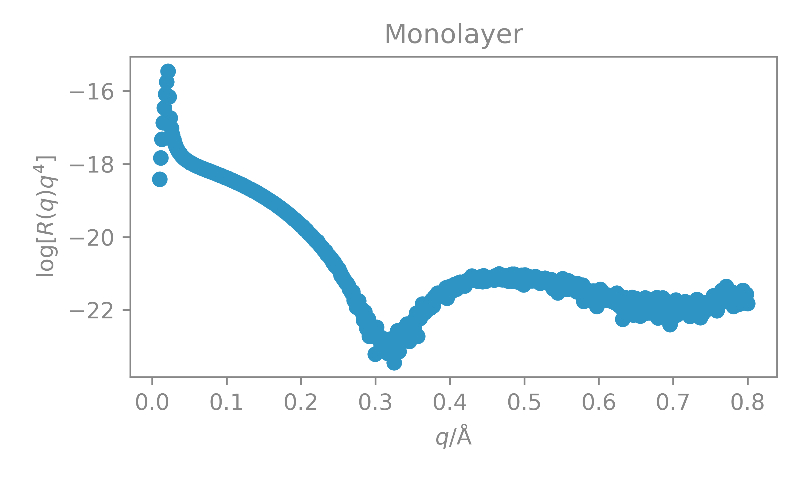
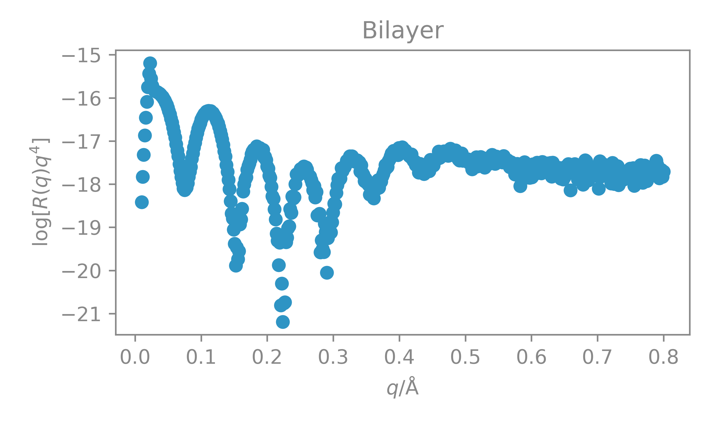
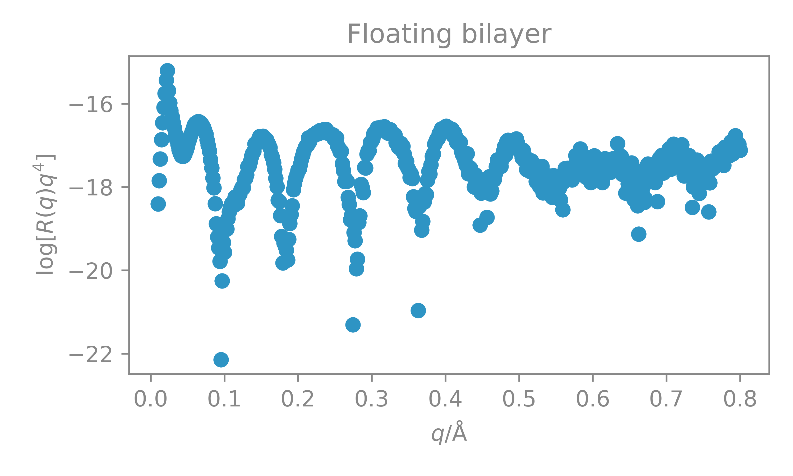
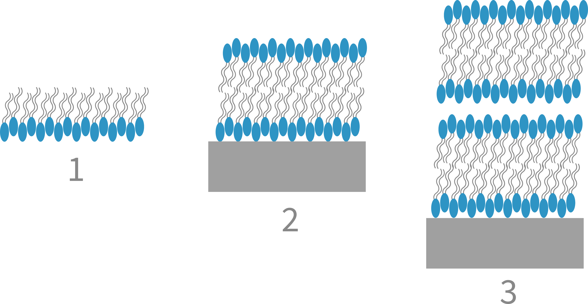
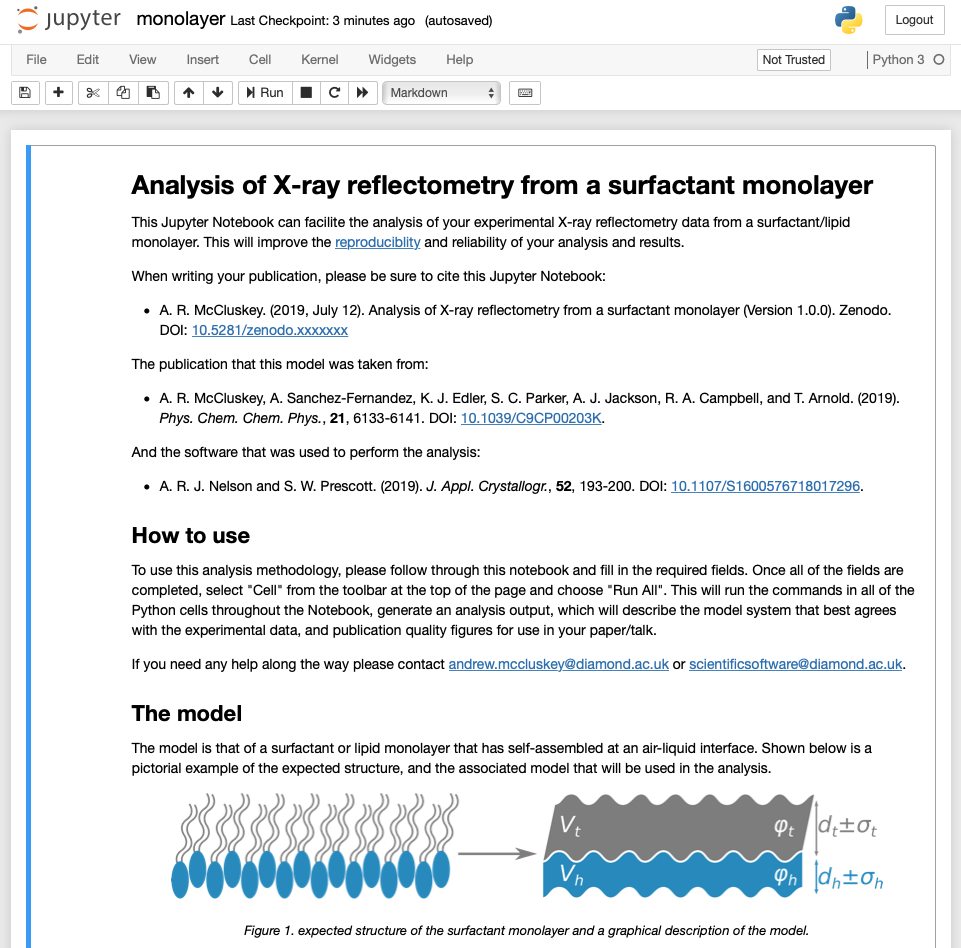
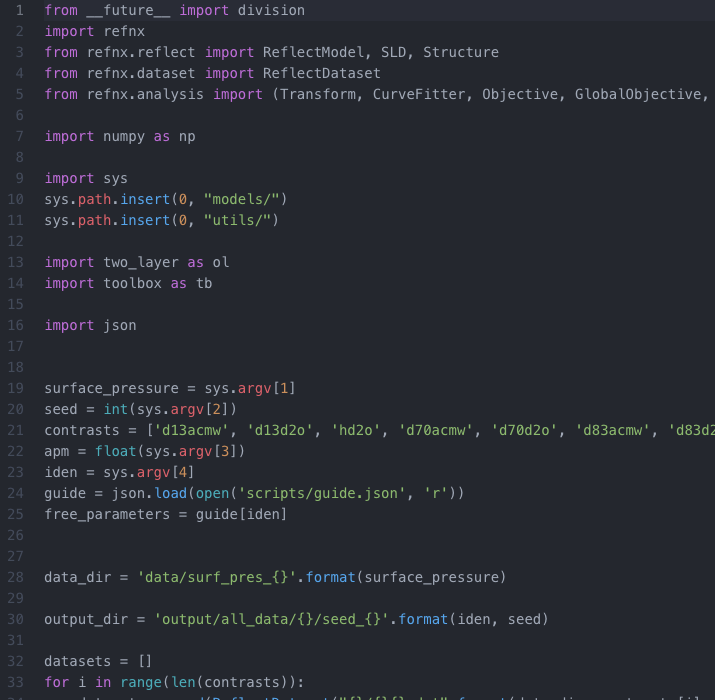

users bring cool science to the beamline
experimental data is reduced
data analysis is performed
nature paper is written and published


what can we automate?
x-ray reflectometry reduction is well studied
Previous literature focuses on point detectors, while modern instruments utilise area detectorsA. Gibaud, G. Vignaud, & S. K. Sinha. Acta Cryst., A49, 642-648, 1993
F. Salah, B. Harzallah, & A. van der Lee. J. Appl. Crystallogr., 40, 813-819, 2007.
not re-inventing the wheel, but re-building it

this will enable automated reduction
reflectometry analysis is model-dependent
Can we automate the model selection?machine learning for model selection

ml-driven classification
ml-driven classification
 1. A. R. McCluskey, et al.. Phys. Chem. Chem. Phys., 21, 6133-6141, 2019.2. Y. Gerelli. Phys. Rev. Lett., 122, 248101, 2019.
3. V. Rondelli, G. Fragneto, S. Motta, E. Del Favero, L. Cantù, J. Phys. Conf. Ser., 340, 012083, 2012.
convolutional neural network
Very quick and accurate for "model" data;2 epochs → 100 % validation accuracy
how robust is our model?
| Monolayer | Bilayer | Floating Bilayer | |
|---|---|---|---|
| DPPC Validation | 100 % | 100 % | 100 % |
| DXPC Validation | 100 % | 100 % | 100 % |
with ml we can advise analysis
We can create generic analysis interfaces which the machine learned classification would suggestjupyter notebook
This could be in the form of a Jupyter Notebook that you could run from your office
automated script
Or an automated analysis script could be run on well tagged data